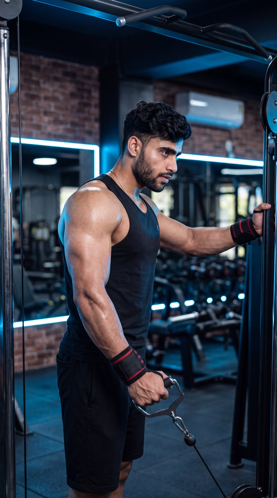

Primary Muscle
Lateral Deltoids
Build Wider Shoulders, Correct Muscle Imbalances & Maximize Side Delt Activation
The One-Arm Cable Lateral Raise is an isolation shoulder exercise that primarily targets the lateral deltoids while also engaging the anterior deltoids, supraspinatus, upper trapezius, and core stabilizers. Training one arm at a time helps improve muscle symmetry, strengthen weaker sides, maintain constant cable tension, and build broader, stronger, and more defined shoulders.

Lateral Deltoids
Cable Machine
Beginner
Isolation
Discover which muscles are primarily responsible for the One-Arm Cable Lateral Raise and which supporting muscles help stabilize the shoulder, maintain constant cable tension, improve unilateral strength, and build balanced shoulder development.
Side Shoulders
Front Shoulders
Rotator Cuff
Abdominals & Obliques
Discover how the One-Arm Cable Lateral Raise helps build wider shoulders, correct muscle imbalances, maintain constant cable tension, and maximize lateral deltoid development through unilateral training.
Directly targets the lateral deltoids to increase shoulder width, creating a broader, more athletic upper-body appearance.
Training one arm at a time helps identify and strengthen weaker shoulders, improving muscular symmetry and balanced development.
Unlike dumbbells, the cable provides continuous resistance throughout the entire range of motion, maximizing lateral deltoid activation.
The unilateral movement challenges your shoulder and core stabilizers, improving joint control and overall upper-body stability.
Focusing on one shoulder at a time improves muscle awareness, helping you contract the lateral deltoid more effectively during every repetition.
Combining unilateral training with continuous cable resistance and progressive overload helps develop stronger, fuller, and more defined side deltoids over time.
Follow these step-by-step instructions to perform the One-Arm Cable Lateral Raise with proper posture, controlled movement, and constant cable tension to maximize lateral deltoid activation, improve shoulder symmetry, and build broader, stronger shoulders.
Attach a single handle to the lowest pulley of a cable machine. Stand beside the machine and grasp the handle with the outside hand. Step slightly away until the cable is under constant tension with your arm resting across the front of your body.
Keep a slight bend in your elbow before beginning each repetition.
Tighten your core, keep your chest lifted, and maintain a neutral spine. Avoid leaning toward or away from the cable machine while keeping your shoulders level throughout the exercise.
Keep your torso completely still so only your shoulder joint performs the movement.
Lift the handle out to your side in a smooth arc until your upper arm reaches approximately shoulder height. Maintain a slight bend in your elbow and avoid using momentum.
Lead with your elbow rather than your hand to maximize lateral deltoid activation.
Briefly pause when your arm reaches shoulder height while maintaining constant cable tension. Squeeze your lateral deltoid and avoid shrugging your shoulder.
Think about moving your elbow outward instead of simply lifting the handle.
Slowly lower the handle back to the starting position while maintaining continuous cable tension. Complete all repetitions on one arm before switching sides.
Never let the weight stack rest between repetitions to keep constant tension on the working shoulder.
Avoid these common technique mistakes to maximize lateral deltoid activation, improve shoulder symmetry, maintain constant cable tension, and perform the One-Arm Cable Lateral Raise safely and effectively.
Swinging your torso or leaning sideways to lift the cable reduces lateral deltoid activation and shifts the workload away from the target muscle.
Use a lighter weight, brace your core, and lift the cable with slow, controlled movement while keeping your torso stable.
Elevating the working shoulder during the raise increases upper trapezius involvement and reduces emphasis on the lateral deltoid.
Keep your shoulder down and relaxed while leading the movement with your elbow instead of lifting with your upper traps.
Lifting your arm well above shoulder height increases trap involvement without providing additional stimulation to the lateral deltoid.
Raise your upper arm until it is approximately parallel to the floor while maintaining smooth, controlled movement.
Allowing the weight stack to touch down between repetitions removes cable tension and reduces the effectiveness of the exercise.
Maintain continuous cable tension by controlling both the lifting and lowering phases without allowing the weight stack to rest.
Apply these practical coaching cues to improve your One-Arm Cable Lateral Raise technique, maximize lateral deltoid activation, correct muscle imbalances, and perform every repetition with excellent control and precision.
Initiate every repetition by driving your elbow upward instead of lifting with your hand. This keeps the emphasis on the lateral deltoid and improves shoulder isolation.
Think about moving your elbow toward the ceiling while your hand simply follows the cable.
Complete all repetitions on one arm before switching sides. This helps improve muscle symmetry and allows you to identify and correct strength imbalances.
Let your weaker shoulder determine the number of repetitions for both sides.
Avoid shrugging the working shoulder during the raise. Keeping your shoulder relaxed ensures the lateral deltoid performs the majority of the work.
Keep your shoulder away from your ear throughout the entire movement.
One of the biggest advantages of this exercise is continuous resistance. Control both the lifting and lowering phases to keep the lateral deltoid under tension throughout every repetition.
Never allow the weight stack to rest between repetitions if your goal is maximum muscle growth.
Progress from learning proper Face Pull mechanics to building stronger rear deltoids, improving shoulder stability, enhancing posture, and advancing to more challenging rear shoulder and upper back exercises.
Begin with a light cable resistance to learn the correct rope path, elbow position, external shoulder rotation, and stable body posture before increasing the load.
Proper cable setup, strict form, controlled movement, and smooth external shoulder rotation throughout every repetition.
Perform controlled repetitions while keeping your elbows high, shoulders relaxed, and the rope moving toward your face with proper external rotation.
Rear deltoid activation, rotator cuff strength, scapular control, and improved mind-muscle connection.
Gradually increase the cable resistance while maintaining perfect technique, full shoulder rotation, and complete control during both the pulling and lowering phases.
Progressive overload, shoulder stability, controlled tempo, and balanced rear shoulder development.
After mastering the Face Pull, progress to advanced exercises such as Single-Arm Face Pulls, Reverse Pec Deck Flyes, Bent-Over Rear Delt Raises, or Cable Rear Delt Flyes to further improve shoulder stability, posture, and upper back development.
Advanced rear deltoid strength, rotator cuff development, shoulder health, muscular balance, and long-term upper-body performance.
Find clear answers to common questions about the One-Arm Cable Lateral Raise, including proper technique, muscles worked, unilateral training, cable setup, training frequency, and progression.
The One-Arm Cable Lateral Raise primarily targets the lateral deltoids while also engaging the anterior deltoids, supraspinatus, and core stabilizers. The unilateral movement helps improve shoulder balance and muscle symmetry.
Training one arm independently helps identify and correct strength imbalances, improves shoulder stability, and allows each lateral deltoid to work without assistance from the opposite side.
Both exercises are effective. The One-Arm Cable Lateral Raise provides constant resistance throughout the movement and makes it easier to train each shoulder individually, while dumbbells rely on gravity and provide less tension at the bottom of the movement.
Yes. Beginners should start with light resistance, focus on strict technique, avoid using momentum, and gradually increase the weight as shoulder strength and movement control improve.
Most people benefit from performing the One-Arm Cable Lateral Raise one to three times per week as part of a balanced shoulder or upper-body training program while allowing adequate recovery between sessions.
For most training goals, performing 2–4 working sets of 10–15 controlled repetitions per arm is highly effective. Focus on maintaining constant cable tension, perfect technique, and controlled movement rather than lifting heavier weights.
Explore other shoulder exercises that complement the One-Arm Cable Lateral Raise and help you build wider shoulders, improve muscle symmetry, increase shoulder stability, and develop balanced deltoids.


Continue building stronger, more balanced shoulders with step-by-step exercise guides covering proper technique, muscles worked, common mistakes, expert coaching tips, and progressive training strategies.